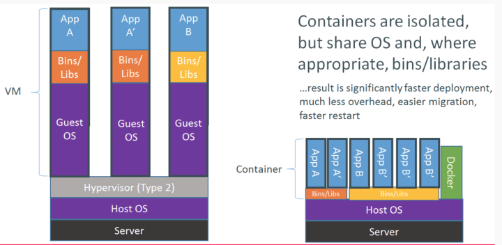

IT通用技术进阶Docker
容器是什么
容器技术是一种进程隔离技术
应用可以运行在一个个互相隔离的容器中与虚拟机不同的是
应用运行时共用着一个Kernel容器技术
提升了对系统资源的利用率
提高了应用的部署迁移效率

Docker是什么
Docker是一个开源的应用容器引擎，基于Go语言并遵从Apache2.0协议开源。
Docker可以让开发者打包他们的应用以及依赖包到一个轻量级/可移植的容器中，然后发布到任何流行的linux机器上，也可以实现虚拟化。
Docker与虚拟化

Docker概念
Docker工作架构
Linux Docker安装
配置yum源
/etc/yum.repos.d/docker.repo
[ali-epel]
baseurl=https://mirrors.aliyun.com/epel/6/x86_64/
enabled=1
gpgcheck=0
安装Docker软件
yum -y install-io
Docker服务管理
Docker服务查看
service docker status
Docker服务启动
service docker start
Docker服务停止
service docker stop
Docker服务开机启动
chkconfig docker on
Docker信息查看
Docker加速器配置
/etc/docker/daemon.json
{ "registry-mirrors":["https://xazu3949.mirror.aliyuncs.com"]}
重启docker服务
service docker restart
搜索和下载容器
搜索镜像
docker search centos
下载镜像
docker pull centos
查看本地镜像
docker images
运行dacker容器
运行docker容器
docker run -i -t -d centos /bin/bash
查看运行中的容器
docker ps [-a]
进入后台运行的容器
docekr attach <CONTAINER ID>
登陆docker
登陆Docker
docekr exec -it <CONTAINER ID>|<NAMES> /bin/bash
exit退出，结束运行
按ctrl+P+Q退出，后台继续运行
SSH登陆
如果容器有启动SSH服务，可通过SSH登陆容器
数据复制
把容器的文件或目录复制到本机
docker cp 98d01104e30:/www/ /www/
把主机文件或目录复制到容器
docker run 创建容器时，挂载制定目录
docker run -itd -v /data:/data my/centos /bin/bash
容器启停
启动容器
docekr start <CONTAINER ID>|<NAMES>
停止容器
docker stop <CONTAINER ID>|<NAMES>
重启容器
docker restart <CONTAINER ID>|<NAMES>
构建镜像-从容器构建镜像
1.运行一个容器
2.登陆容器，修改容器内的文件或软件（如安装httpd）
3.停止容器
docker stop
提交容器
docekr commit -m "my new centos" -a "harry" faca my_centos:V2
构建镜像-使用Dockerfile构建镜像
1.创建空目录，并新建Dockerfile文件
FROM
基于哪个镜像
RUN
安装软件用
MAINTAINER
镜像创建者
2.创建镜像
docker build -t my/centos_nfs:v2 .
Dockerfile实例一
#cat Dockerfile
FROM centos:6
MAINTAINER Kent
RUN yum -y install httpd
WORKDIR /root
ADD index.html /var/www/html
CMD /etc/init.d/httpd start